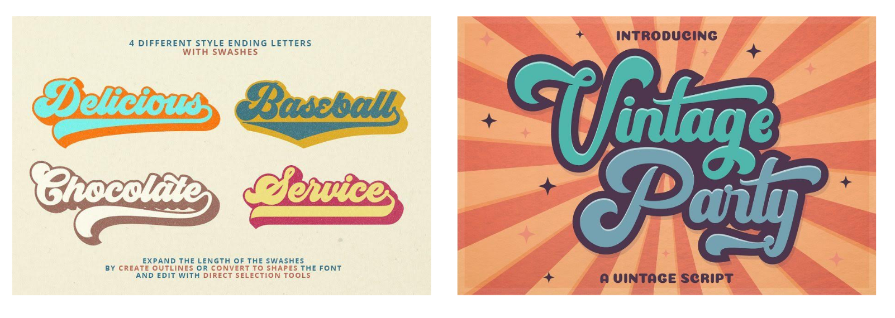
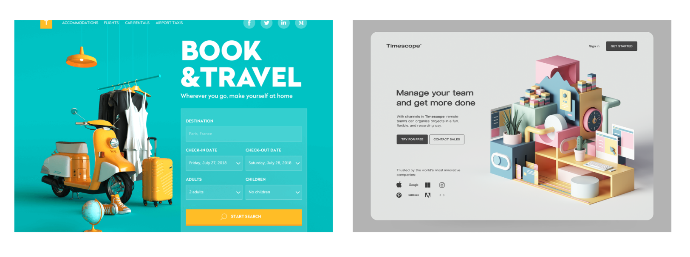
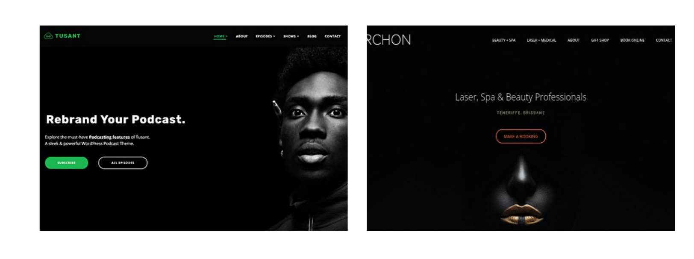
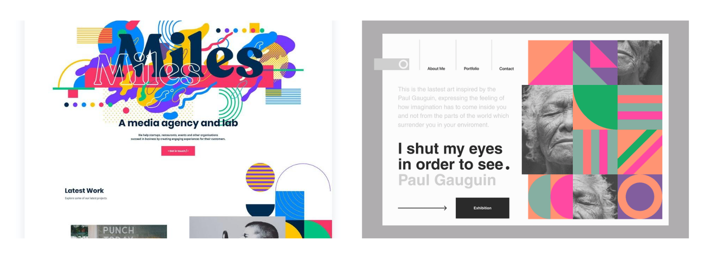
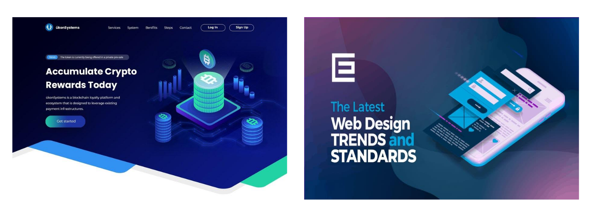
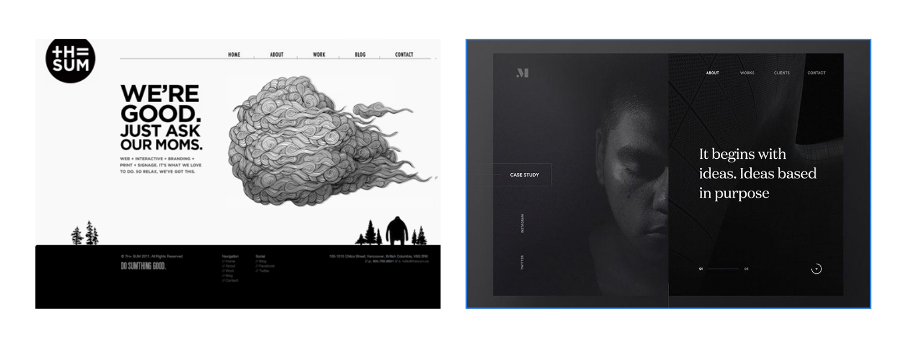
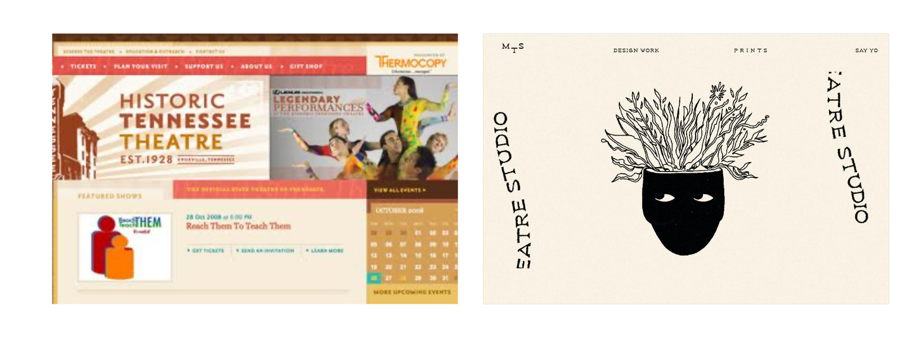
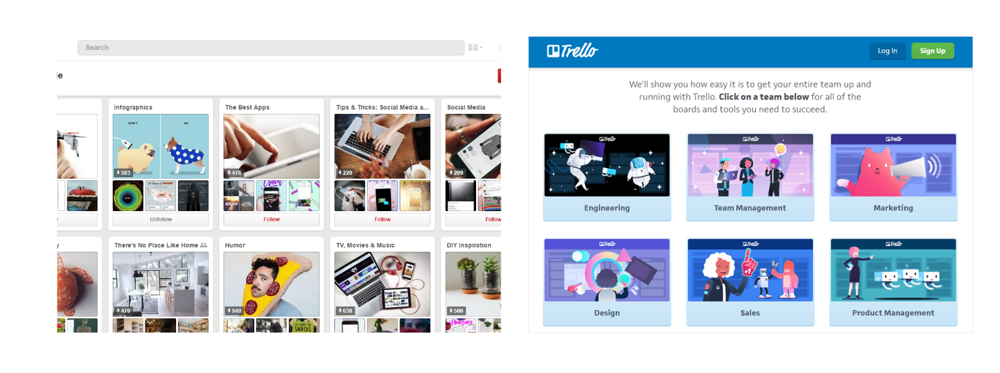
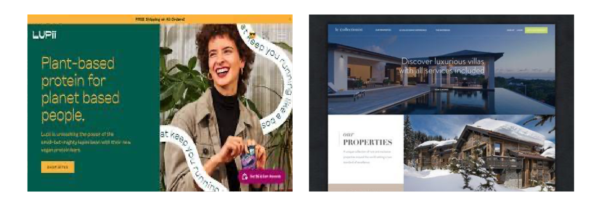
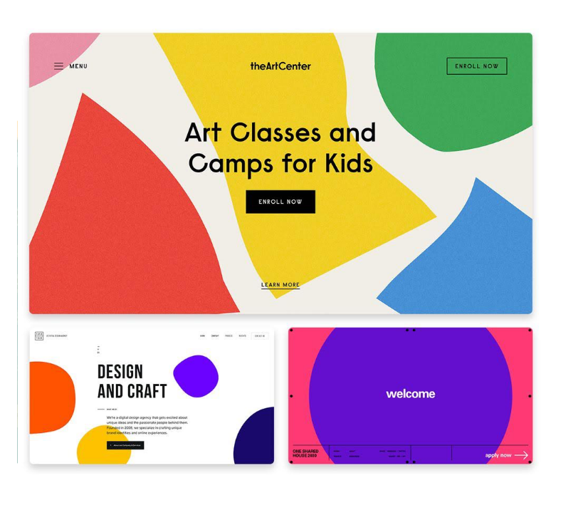

Website. What is a Website? Do you know what a website is? Why people make a website? Or What is website's true potential? I am sure many of you consider a website like a page of a notebook i.e., just information. In our daily life, we face many difficulties or problems, and to counter it, website comes into action. From food to knowledge, there is a website of every thing. There are many coders, freelancers, and other people who charge thousands, millions of rupees to make a website in the market. But just creating a website is not enough. Imagine a website be a shop and getting a domain name and URL is like getting a plot for the shop. But just getting a property isn’t enough to generate income, you will have to choose its appearance, decide what to sell and many other different aspects to make a good fortune of income.
The creation of a website is the same where you must create content, select images and make it appear attractive accordingly. Did you know the most demanding part in the creation of the website is its appearance? Yes, the reason behind it is the role appearance plays in attracting traffic. I mean, it's like judging a book by its cover. The audience will never pay heed to your content or your work until and unless they find the website attractive enough. And that's why most bloggers or other businessman don’t get much profit out of their work. Now, if you are a person who suffers the same and want to make sure that your website is unique, then here are some top 2021 website design trends because, as we know, "Design is something that made intelligence visible."
We all have heard the famous phrase" Old is Gold" and these days, it is getting true with each passing moment and that’s why Retro Fonts have gained their much appreciated applause. However, the throwback typography has gone through a bit of a resurgence. We do not see the same tired fonts we rather see an upsurge in styling and artistry reimagination of what retro fonts can be seen as today. As we can see in the below designs, instead of feeling spoiled and cliche, they breathe new life into old retro bold fonts with a dash of experimentation
Everything seems nice when it seems to be real. 3D designs has come a long way from the blocky and bevelled edges of GeoCities. We see high-quality 3D visuals weaved seamlessly into web designs. As we can see in these designs, there’s an excellent sense of harmony between all design elements. It is the perfect example of how in the most minimalistic layouts, 3D can make an ever-bigger impression.
The dark mode is hitting more screens in 2021. This isn't just a reversal of the color palette. It is an intentional combination of deeper-darker colors that create the same visual feel as light mode and maintain readability and functionality. In the projects, they often give a pensive effect. Thus it is vital to think about how dark mode influences the overall vibe of the information and content of the website design.
Nothing is more challenging than interpreting the art, especially abstract art. It improves our creativity and imagination as it stimulates our high-level areas of the brain. It can include images of people; they still evoke emotion without them. Their burstiness gives energetic vibes, and their many vibrant colours are infectiously warm. As we can see below, these proj
Products are the most essential aspect of a website. The main reason for the creation of the website is the promotion of a particular product and thus are usually located at the heart of the website. Products are inspiring literal design elements through creative, digital interpretations of physical media. As we can see in these designs, the approach creates visual synergy between the product and its website; it makes web pages feel more organic and unexpected.
Who says classics are cliché/boring? I think classics are the only thing that can make someone or something extraordinary. Black and white are the two classic colours and nothing more is excellent than their illustrations. The nice thing about their illustrations in a website is their seemingly real and in-the-moment presence. As we can see in the designs, these illustrations seem to “match” almost any design aesthetic and it makes them a popular option for all kinds of industries or website types.
Just like grains can give a design more natural feel, so can subdued colours. The muted colours are very distinct and have a powerful impact on structures like the perfect backdrop or the hand-drawn styled text and illustrations. The slightly buzzing grain that’s almost indiscernible or a subtle distortion in the light and dark backgrounds making the design feel very much alive.
Just seeing written text and reading it is so boring and dull. I mean, who likes to just read and read on a single page? It makes a person less attracted towards the content. And thus, to make an impact many bloggers have started putting scrolling cards which are now an integral part of designs. Whether scrolling horizontally or vertically, they add swift action to a website and are a great way to present information.
Animated typographic elements are something that uses a sentence or collection of words for decorative purposes. A lively string of words will often be seen as a particular shape, contrary to the standard horizontal, left-to-right sentence format. As we can see in the design, this technique helps to convey a branding or marketing objective, creating the desired vibe or visual theme in a fun manner.
Keeping Simple is good as no one likes anything too complicated. Complicated content makes things fuzzy and sometimes creates misunderstandings and misinterpretations among people. The same goes for shapes. The artistic style of the 90’s era has made its comeback in web design trends — this time in the form of simple shape motifs integrated throughout design schemes. As we can see in the design, two-dimensional shape illustrations boast one shade of colour and no depth or texture. These illustrations entail their common goal is to draw the attention of the website visitor.
